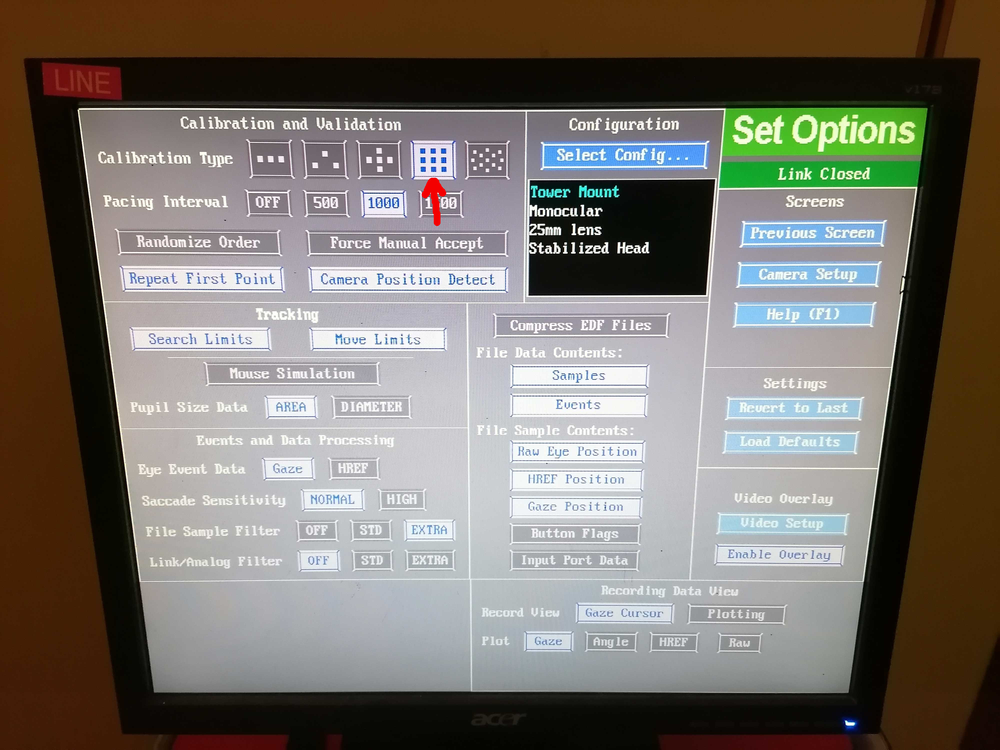

Notes on the scanner's console and recording devices
Quick guide to the protocol settings and configuration¶
Editing a sequence¶
- Double click on the sequence name.
-
After editing the sequence, you MUST store the changes if you want them to be kept by clicking on the button:

Setting sequences for automatic start¶
-
You can set the worker icon on the left of the sequence by clicking on it if you want to pause before starting that sequence. If the worker is not present, the sequence will launch automatically.

-
Blocks with a name between double underscores
__*__introduce an Exam Paused break. Such breaks prompt a modal dialog with the Exam Paused title like this:
The Patient has Contrast Agent checkbox MUST always be unchecked, as this protocol does not involve a contrast agent"
-
Click when you are ready to proceed.
Setting the FoV¶
Using the anatomical image to adjust the field-of-view (FoV) is RECOMMENDED
- Drag and drop the protocol's stack icon (🗇) corresponding to the
anat-T1w__mpragesequence into the image viewer. The icon will appear AFTER the image has been acquired.
- Make sure that the FOV (yellow square) includes the whole brain by tilting or translating the FOV. If the full brain, including the cerebellum, do not fit in the FOV, favorise making sure that the cortex is fully enclosed in the yellow square. For reproducibility, it is better if the FOV across sequences have a similar center and a similar tilt. However, if it is not possible, the priority remains to include the whole brain in the FOV.
- If two sequences have the same resolution and the same number of slices, you can copy paste the FOV
- Open the sequence for which you want to adjust the FOV/geometry
- Right click on the sequence for which the FOV has already been carefully positioned
- Select
Copy Parameters -
Center of slice groups and saturation regions
-
Once the FOV is well placed, store the new settings of the sequence by pressing .

Eye-Tracker Calibration Process¶
-
On the eye-tracking (ET) computer, ensure that the appropriate calibration type is selected (9-point for PCT and 5-point for resting state and breath-holding tasks):
- Click on Set Options located on the right side of ET computer screen.
-
Under Calibration type in the top left corner, choose the image containing either 9 or 5 points.

-
Two crosses should appear on the ET computer screen: one at the center of the pupil and the other at the center of the corneal reflection. If they're not visible, proceed sequentially with the following steps:
- Adjust the focus of the ET camera and the pupil detection threshold.
- If the cross remains invisible, realign the mirror frame position by sliding it along the rails attached to the coil. You may ask the participant to do it while inside the bore.
- If the cross remains invisible, re-adjust the participant's head positioning inside the coil. You'll need to extract the bed outside of the bore for this by pressing the Home button (:home:).
- If the cross remains invisible, revise the vertical position of the infrared mirror with respect to the standard mirror (this will require new gloves and replacing the tape to stick the infrared mirror). Even a tiny adjustment can impact calibration and eye positioning.
- If the cross remains invisible, repeat the previous steps as needed.
- Initiate the ET calibration by pressing C on the laptop keyboard or by clicking on Calibration on the ET interface.
-
Once the participant's gaze stabilizes on the first fixation point, the Accept fixation button turns green. Click on it to confirm the initial position.

-
Subsequent positions should be automatically validated when the gaze remains stable. If not, manually click the Accept fixation button when it turns green.
- After the calibration, ensure that the fixation points' positions match the expected pattern corresponding to the 9- or 5-point calibration. If the pattern appears too distorted, restart the calibration.
- Upon successful calibration, initiate validation by clicking Validation on the ET interface or pressing the V key on the laptop keyboard. Follow the same instructions as in the calibration to validate positions.
- If validation fails, repeat previous steps and restart calibration. Otherwise, you can leave the calibration mode and proceed with the task program by pressing the Esc key on the laptop (███).